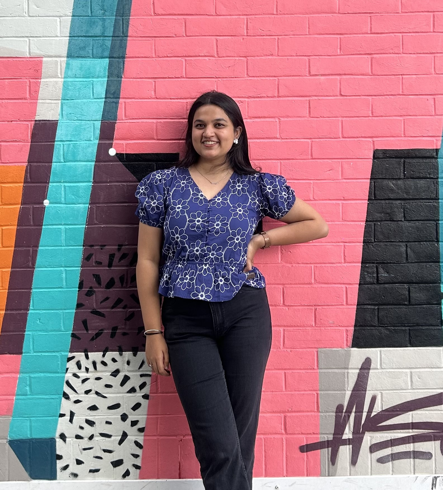

Hi, I'm Isha Kulkarni
MSc in Computer Science @ UoS
AI/ML, Generative AI Enthusiast | Developer| Researcher
Passionate about leveraging technology to solve real-world problems. Experienced in Python, AI/ML development.

Latest Updates
- Pursuing Master's in Computer Science at University of Southampton- Sept 25
- Software Developer at Persistent Systems Ltd.- Aug 25